Co nowego
Zmiany w ostatnich wersjach Pit Wall Crew.
Wersja 0.4.4.1 (14.11.2026)
POPRAWKAOkno: zmiana strony i rozmiaru bez przeskoków – strona i raport z jazdy pojawiają się od razu ułożone.
POPRAWKAPit wall: zabezpieczenie strony – dane z bazy zespołu i z linku dla obserwatorów są zawsze pokazywane jako tekst.
POPRAWKAPit wall: po „Odśwież” w „Okrążeniach” lista do porównania pokazuje nowe okrążenia.
POPRAWKAPit wall: po ponownym zalogowaniu do tego samego zespołu wraca widok zespołu zamiast ekranu logowania.
POPRAWKAPit wall: filtr sesji w „Okrążeniach” nie miesza okrążeń dwóch aut zespołu jadących naraz.
POPRAWKAPit wall: „Szybki plan” przy błędnych liczbach pokazuje komunikat zamiast zawieszać stronę.
Wersja 0.4.4.0 (13.11.2026)
NOWEWyjazd poza tor liczy się tylko ze skutkiem (kara gry, strata czasu, uderzenie); szerokie wyjścia bez kary raport z jazdy pokazuje osobno.
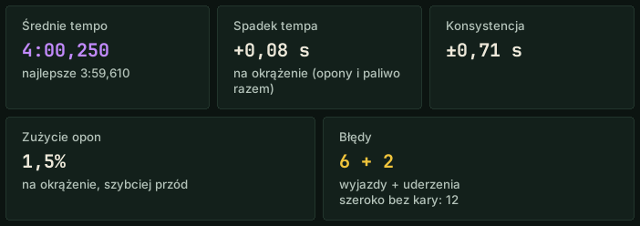
POPRAWKARada o oponach na pitstop nie zmienia się w trakcie stintu (było: „cztery opony”, a na zjeździe „bez opon”).
POPRAWKARada ciśnień na pitstop tylko z ustabilizowanych ciśnień; w Assetto Corsa w klikach gry.
POPRAWKA„Pobudka, nie śpij!” nie pada po pitstopie ani po uderzeniu, „Wróciłeś do rytmu” – dopiero gdy znane jest Twoje tempo.
POPRAWKAPytania rozpoznawane po całych słowach: „starczy?” to nie tarcze, „tempo spada” to nie pogoda.
POPRAWKA„Zmieniamy opony?” to pytanie, nie polecenie; „energia do pełna” ustawia menu boksu.
POPRAWKA„Czy zmienić opony na deszczowe?” odpowiada radą o deszczu, nie o zużyciu opon.
POPRAWKA„Przejadę 15 okrążeń na pełnym baku?” liczy też energię wirtualną.
POPRAWKARywale: odstęp, tempo i prognoza dojścia zgadzają się ze sobą; bez porównań z okrążeniem z pitstopem.
POPRAWKAPrędkość maksymalna rywali dopiero z pełnego okrążenia.
POPRAWKANajlepsze okrążenie to czas zaliczony przez grę – bez okrążeń skasowanych za limity toru (raport z jazdy i głos).
POPRAWKARaport z jazdy i podsumowanie wyścigu obejmują ostatnie okrążenie do mety.
POPRAWKARaport z jazdy: nic nie jest ucinane, także w wąskim oknie i przy powiększeniu ekranu; poprawne „Na pełnej energii … okr.”.
POPRAWKARaport z jazdy: „ABS” i „TC” wielkimi literami (było „Abs przez całe hamowanie”).
POPRAWKAPo pytaniu inżyniera („Pasuje?”) nic już nie jest dopowiadane.
POPRAWKAPolski głos: poprawne ułamki („kosztuje jedną i sześć dziesiątych sekundy”).
POPRAWKAOstatnie okrążenia wyścigu: poprawne odpowiedzi o strategii, zjeździe rywali, paliwie do mety i uszkodzeniach.
POPRAWKA„Jaka pogoda?”: „Tor stygnie, około trzech stopni na godzinę” zamiast „zmienia się o minus trzy stopni”.
POPRAWKADoradca pogody radzi zmianę opon także w sesji mokrej od początku.
POPRAWKANazwiska kierowców zawsze wielką literą.
POPRAWKAInne języki bez klucza Groq: przetłumaczone komunikaty o pitstopie, deszczu i zmęczeniu, rady do setupu, notatki i cały raport z jazdy.
POPRAWKAInne języki bez klucza Groq: komendy działają z każdym nazwiskiem.
POPRAWKAInne języki: notatki i uwagi o aucie zapisywane słowami kierowcy; numer zakrętu nie gubi reszty zdania.
POPRAWKAHiszpański: pit wall i radio zespołu nie wracają do polskiego.
POPRAWKAJednostki °F, mph, psi i galony: wszystkie liczby w zdaniu przeliczone (opony, ciśnienia, prędkość maksymalna, paliwo).
POPRAWKADemo: działa „cisza”, „gdzie jest Kowalski?” i „jakie mam notatki?”; płatne polecenia mówią, że są w pełnej wersji.
POPRAWKADemo: gwiazdki na liście komend zgodne z tym, co działa; raport z jazdy pokazuje zakręt z największą stratą.
POPRAWKADemo: o deszczu same fakty; kiedy zmienić opony – w pełnej wersji.
POPRAWKATryb Solo: polecenie powiadomienia mówi, że działa tylko w zespole.
POPRAWKAZamknięcie okna tuż po uruchomieniu nie wysyła już raportu awarii.
POPRAWKAPytanie z imieniem inżyniera („Jak sytuacja, Larry?”) rozumiane jak bez imienia, we wszystkich językach.
POPRAWKAInżynier odpowiada na powitanie („Cześć”).
POPRAWKAGdy Windows blokuje część programu („Inteligentna kontrola aplikacji”), okno mówi o tym wprost i podaje, co zrobić.
Wersja 0.4.3.44 (12.11.2026)
NOWEGłosowa instrukcja komend: „jakie są komendy o rywalach?”, „co mogę zapytać o opony?”, „dalej”.
NOWERywal zakręt po zakręcie bez nazwiska: „gdzie tracę do tego przede mną?”, „gdzie jest szybszy ten, który mnie goni?”.
NOWEUstawienia → Dźwięk i język: „Rozmiar tekstu” (100 / 110 / 125%) dla całego okna.
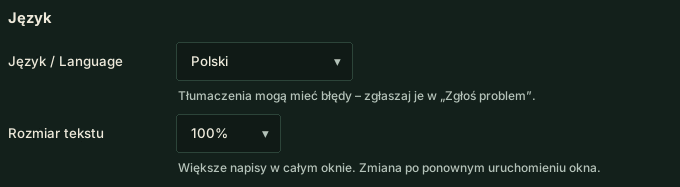
POPRAWKAPorównanie z rywalem: wyraźnie z nazwiskiem („Kowalski szybszy w T5…”), w każdym języku także bez klucza Groq.
POPRAWKA„Gdzie tracę do Kowalskiego?” porównuje z rywalem, nie z Twoim własnym okrążeniem.
POPRAWKA„Jak sytuacja?” i „co się dzieje?” – krótki stan zamiast braku odpowiedzi.
POPRAWKA„Możesz mówić” / „mów dalej” kończy też wyciszenie po „cisza”.
POPRAWKAPolski głos mówi „spoter”, nie „spater”.
POPRAWKAOkno: drobne napisy większe, szare teksty wyraźniejsze.
POPRAWKAOkno: elementy zakładki pojawiają się od razu po jej otwarciu.
POPRAWKACel „Tempo wyścigowe” oznaczony w oknie jako funkcja eksperymentalna.
Wersja 0.4.3.38 (12.11.2026)
NOWERaport z jazdy, karta Opony: optymalna temperatura opon dla auta (w Assetto Corsa także optymalne ciśnienie).
POPRAWKAOkno po aktualizacji: zrzuty nowych funkcji w pełnej wielkości, czytelne.
POPRAWKARaport z jazdy: temperatury opon – zewnętrzna krawędź po zewnętrznej stronie auta.
POPRAWKARaport z jazdy: odpowiedź na pytanie pojawia się bez odświeżania całej strony.
Wersja 0.4.3.37 (12.11.2026)
NOWECel jazdy: „Najlepszy czas” albo „Tempo wyścigowe” (endurance, funkcja eksperymentalna) – raport daje wskazówki pod najlepsze okrążenie albo pod średnie tempo i zużycie opon; przełącznik na stronie Inżynier i głosem.

NOWERaport z jazdy: karta „Od ostatniego razu” (porównanie z poprzednią albo wybraną jazdą na tym torze tym autem), „Zapytaj o ten raport” (też głosem: „co z raportu?”), filtr toru i auta, „Usuń raport”, prostsze opisy „Na następny stint”.


NOWE„Co nowego” w oknie i na pit wallu: zrzuty nowych funkcji – widać, gdzie są i jak wyglądają.
NOWEJazda na długi stint: zapytaj „jak oszczędzać opony?” – inżynier poda zasady z Twoich danych; przy celu „Tempo wyścigowe” nie porównuje już zakrętów z najlepszym okrążeniem.
NOWETempo wyścigowe (funkcja eksperymentalna): długość stintu i opony na 1–3 stinty (strona Inżynier albo głosem) – raport liczy spadek tempa i prognozę na komplet opon.

POPRAWKARaport z jazdy: „Konsystencja” zamiast „Równość” (też na pit wallu), jedno zdanie zamiast powtórzeń przy tej samej wadzie auta, porównania tylko podobnych jazd, rady w języku programu, „podsumowanie stintu” odświeża bieżący raport.
POPRAWKAAI: krótsze pytania do Groqa – rzadziej „limit wyczerpany”; inżynier mówi, czy to limit na minutę, czy dzienny.
POPRAWKAAssetto Corsa: dokładniejsze rady AI o setupie (amortyzatory, dobijanie, prześwit, camber, hamulce).
POPRAWKAOkno aktualizacji: lista zmian w języku programu.
POPRAWKARada o ciśnieniach przy zmianie temperatury toru (noc, poranek) znów działa.
Wersja 0.4.3.36 (12.11.2026)
NOWERaport z jazdy: przycisk do porównania przejazdu z kolegą na pit wallu.
POPRAWKAMapa toru znów zbiera dokładny kształt toru i wysyła go zespołowi.
POPRAWKA„Jaka strata?” – odstęp do auta przed i za Tobą (poza wyścigiem: czasy okrążeń), bez pytania AI.
Wersja 0.4.3.35 (11.11.2026)
NOWERaport z jazdy w demo: karta z tym, co z tej jazdy pokazałaby pełna wersja.
NOWE„Jak zrobiłem fioletowy sektor?” – co w najlepszym sektorze albo okrążeniu poszło lepiej niż zwykle.
POPRAWKAMikrofon: gdy słuchawki włączysz po starcie programu, inżynier sam przełącza się na nie z mikrofonu laptopa.
POPRAWKARaport z jazdy: poprawne nazwy szykan w radach o setupie, bez powtórzeń.
Wersja 0.4.3.34 (11.11.2026)
NOWEOstrzeżenie, gdy w garażu zmienisz ustawienie odwrotnie niż w radzie.
POPRAWKARady o setupie nie powtarzają się w kółko.
Wersja 0.4.3.33 (11.11.2026)
NOWEPit wall: dokładny kształt toru (co 4 m) od pierwszego kierowcy zespołu, który przejedzie tor.
Wersja 0.4.3.32 (11.11.2026)
NOWEZespół: te same numery zakrętów u wszystkich kierowców – na pit wallu i w raportach.
POPRAWKAMapka w raporcie: dokładny kształt toru z Twojego auta (szykany nie są już proste), kropka 2 razy wolniej.
POPRAWKARaport z jazdy: przy mniej niż 4 czystych okrążeniach też widać PS / NS i SETUP.
POPRAWKARaport z jazdy: bez rady „wcześniej gaz”, gdy wyjście było w pełnym gazie aż do hamowania przed następnym zakrętem.
POPRAWKARaport z jazdy: informacja, ilu czystych okrążeń zabrakło do pewnych rad o setupie.
POPRAWKARaport z jazdy: w szczegółach zakrętu jeden pasek przyczepności na fazę.
What's new
Changes in the latest Pit Wall Crew versions.
Version 0.4.4.1 (14.11.2026)
FIXWindow: no more jumps when switching pages or resizing – a page and the driving report appear fully laid out.
FIXPit Wall: page hardening – data from the team database and the spectator link is always shown as plain text.
FIXPit Wall: after “Refresh” in “Laps”, the comparison list shows new laps.
FIXPit Wall: signing in again to the same team brings back the team view instead of the sign-in screen.
FIXPit Wall: the session filter in “Laps” no longer mixes laps of two team cars driving at once.
FIXPit Wall: “Quick plan” shows a message for wrong numbers instead of freezing the page.
Version 0.4.4.0 (13.11.2026)
NEWAn off-track only counts when it has a consequence (game penalty, lost time, impact); the driving report shows wide exits without a penalty separately.
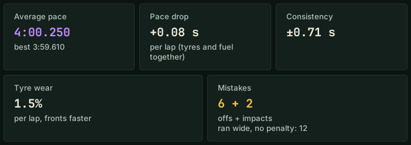
FIXPit stop tyre advice no longer changes during the stint (it said “four tyres”, then “no tyres” on pit entry).
FIXPit stop pressure advice only from stabilised pressures; in Assetto Corsa in the game's clicks.
FIX“Wake up!” no longer comes after a pit stop or an impact; “back in the rhythm” only once your pace is known.
FIXQuestions are matched by whole words – no more answers about the wrong topic.
FIX“Are we changing tyres?” is a question, not a command; “full energy” sets the pit menu.
FIX“Should we change to wets?” gets the rain advice, not the tyre wear answer.
FIX“Can I do 15 laps on a full tank?” also counts virtual energy.
FIXRivals: gap, pace and catch forecast agree with each other; no comparisons with a pit stop lap.
FIXRivals' top speed only from a full lap.
FIXThe best lap is a time the game counted – laps deleted for track limits are excluded (driving report and voice).
FIXThe driving report and race summary include the final lap to the flag.
FIXDriving report: nothing is cut off, also in a narrow window and with display scaling; correct “On full energy … laps”.
FIXDriving report: “ABS” and “TC” in capitals (it said “Abs through the whole braking”).
FIXAfter the engineer's question (“OK?”) nothing more is added.
FIXPolish voice: correct fractions.
FIXFinal laps of a race: correct answers about strategy, rivals' stops, fuel to the finish and damage.
FIX“What's the weather?”: “Track cooling, about 3 degrees per hour” instead of “changing by -3 degrees”.
FIXThe weather advisor recommends a tyre change also in a session that is wet from the start.
FIXDriver names always capitalised.
FIXOther languages without a Groq key: pit stop, rain and fatigue messages, setup advice, notes and the whole driving report are translated.
FIXOther languages without a Groq key: commands work with any driver name.
FIXOther languages: notes and car feedback are saved in the driver's own words; a corner number no longer drops the rest of the sentence.
FIXSpanish: the Pit Wall and team radio no longer fall back to Polish.
FIXUnits °F, mph, psi and gallons: every number in a sentence is converted (tyres, pressures, top speed, fuel).
FIXDemo: “quiet”, “where is Smith?” and “what are my notes?” work; paid commands say they are in the full version.
FIXDemo: stars in the command list match what works; the driving report shows the corner with the biggest loss.
FIXDemo: only facts about the rain; when to change tyres is in the full version.
FIXSolo mode: the notification command says it only works in a team.
FIXClosing the window right after launch no longer sends a crash report.
FIXA question with the engineer's name (“What's going on, Larry?”) is understood like without the name, in every language.
FIXThe engineer answers a greeting (“Hello”).
FIXWhen Windows blocks part of the program (“Smart App Control”), the window says so plainly and tells you what to do.
Version 0.4.3.44 (12.11.2026)
NEWVoice guide to commands: “what are the commands about rivals?”, “what can I ask about tyres?”, “more”.
NEWRival corner by corner without a name: “where am I losing to the car ahead?”, “where is the car behind faster?”.
NEWSettings → Sound and language: “Text size” (100 / 110 / 125%) for the whole window.
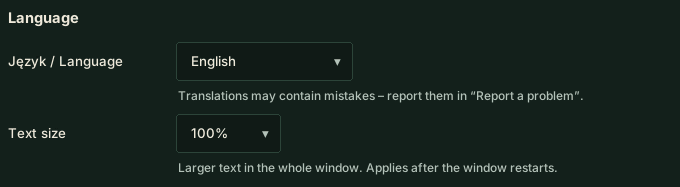
FIXRival comparison: clearly with the name (“Smith is faster in T5…”), in every language, also without a Groq key.
FIX“Where do I lose to Smith?” compares with the rival, not with your own lap.
FIX“What's the situation?” and “what's going on?” – a quick status instead of no answer.
FIX“You can talk” / “carry on” also ends the mute after “quiet”.
FIXThe Polish voice says “spotter” correctly.
FIXWindow: small text is larger, grey text is clearer.
FIXWindow: a tab's content appears right after you open it.
FIXThe “Race pace” goal is marked in the window as an experimental feature.
Version 0.4.3.38 (12.11.2026)
NEWDriving report, Tyres card: the car's optimal tyre temperature (in Assetto Corsa also the optimal pressure).
FIXWindow after an update: screenshots of new features at full size, readable.
FIXDriving report: tyre temperatures – the outer edge is drawn on the outside of the car.
FIXDriving report: the answer to a question appears without refreshing the whole page.
Version 0.4.3.37 (12.11.2026)
NEWDriving goal: “Best lap time” or “Race pace” (endurance, experimental feature) – the report gives tips for your best lap or for average pace and tyre wear; a switch on the Engineer page and by voice.

NEWDriving report: “Since last time” card (a comparison with your previous or a chosen run on this track in this car), “Ask about this report” (also by voice: “what's in the report?”), track and car filter, “Delete report”, simpler “Next stint” descriptions.


NEW“What's new” in the window and on the Pit Wall: screenshots of new features – you see where they are and how they look.
NEWLong-stint driving: ask “how do I save the tyres?” – the engineer gives rules from your data; with the “Race pace” goal it no longer compares corners with your best lap.
NEWRace pace (experimental feature): stint length and tyres for 1–3 stints (Engineer page or by voice) – the report works out the pace drop and a forecast for the tyre set.

FIXDriving report: one “Consistency” label (also on the Pit Wall), one sentence instead of repeats for the same car issue, comparisons only between similar runs, advice in the program's language, “stint summary” refreshes the live report.
FIXAI: shorter requests to Groq – fewer “limit reached”; the engineer says whether it is the per-minute or the daily limit.
FIXAssetto Corsa: more detailed AI setup advice (dampers, bottoming, ride height, camber, brakes).
FIXUpdate prompt: the list of changes in the program's language.
FIXPressure advice when the track temperature changes (night, morning) works again.
Version 0.4.3.36 (12.11.2026)
NEWDriving report: a button to compare your run with a teammate on the Pit Wall.
FIXThe track map collects the accurate track shape and sends it to the team again.
FIX“What's the gap?” – gap to the cars ahead and behind (outside the race: lap times), without asking the AI.
Version 0.4.3.35 (11.11.2026)
NEWDemo driving report: a card showing what the full version would add from this drive.
NEW“How did I do that purple sector?” – what went better than usual in your best sector or lap.
FIXMicrophone: if you turn on your headset after starting the app, the engineer switches to it from the laptop mic.
FIXDriving report: correct chicane names in setup advice, no repeats.
Version 0.4.3.34 (11.11.2026)
NEWWarning when you change a setting in the garage the opposite way to the advice.
FIXSetup advice no longer repeats in circles.
Version 0.4.3.33 (11.11.2026)
NEWPit Wall: exact track shape (every 4 m) from the first team driver to lap the track.
Version 0.4.3.32 (11.11.2026)
NEWTeam: the same corner numbers for every driver – on the Pit Wall and in reports.
FIXReport map: exact track shape from your car (chicanes no longer look straight), the dot moves 2× slower.
FIXDriving report: PS / NS and SETUP also shown with fewer than 4 clean laps.
FIXDriving report: no “throttle earlier” advice when the exit was flat out until braking for the next corner.
FIXDriving report: shows how many clean laps were missing for certain setup advice.
FIXDriving report: corner details show one grip bar per phase.
Was ist neu
Änderungen in den letzten Versionen von Pit Wall Crew.
Version 0.4.4.1 (14.11.2026)
KORREKTURFenster: keine Sprünge mehr beim Seitenwechsel und beim Ändern der Größe – Seite und Fahrbericht erscheinen fertig angeordnet.
KORREKTURPit Wall: Seite abgesichert – Daten aus der Team-Datenbank und vom Zuschauer-Link werden immer als reiner Text angezeigt.
KORREKTURPit Wall: nach „Aktualisieren“ in „Runden“ zeigt die Vergleichsliste neue Runden.
KORREKTURPit Wall: nach erneutem Anmelden im selben Team erscheint wieder die Teamansicht statt des Anmeldebildschirms.
KORREKTURPit Wall: der Session-Filter in „Runden“ mischt keine Runden zweier gleichzeitig fahrender Teamautos mehr.
KORREKTURPit Wall: „Schnellplan“ zeigt bei falschen Zahlen eine Meldung, statt die Seite einzufrieren.
Version 0.4.4.0 (13.11.2026)
NEUEin Ausritt zählt nur mit Folgen (Strafe des Spiels, Zeitverlust, Einschlag); weit rausgetragen ohne Strafe zeigt der Fahrbericht getrennt.
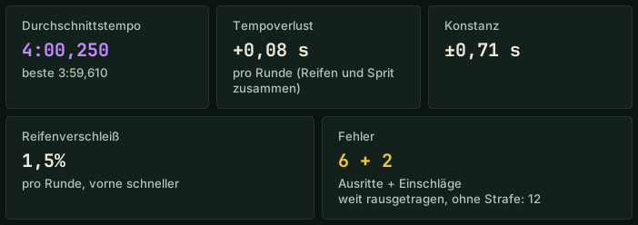
KORREKTURDer Reifentipp für den Boxenstopp ändert sich nicht mehr während des Stints (erst „vier Reifen“, bei der Einfahrt „keine Reifen“).
KORREKTURDrucktipp für den Boxenstopp nur aus stabilisierten Drücken; in Assetto Corsa in Klicks des Spiels.
KORREKTUR„Aufwachen!“ kommt nicht mehr nach einem Boxenstopp oder Einschlag; „wieder im Rhythmus“ erst, wenn dein Tempo bekannt ist.
KORREKTURFragen werden nach ganzen Wörtern erkannt – keine Antworten mehr zum falschen Thema.
KORREKTUR„Reifenwechsel?“ ist eine Frage, kein Befehl; „Energie voll“ stellt das Boxenmenü ein.
KORREKTUR„Sollen wir auf Regenreifen wechseln?“ bekommt den Rat zum Regen, nicht zum Reifenverschleiß.
KORREKTUR„Schaffe ich 15 Runden mit vollem Tank?“ rechnet auch mit der virtuellen Energie.
KORREKTURGegner: Abstand, Tempo und Prognose passen zusammen; keine Vergleiche mit einer Boxenstopp-Runde.
KORREKTURHöchstgeschwindigkeit der Gegner erst aus einer vollen Runde.
KORREKTURDie beste Runde ist eine vom Spiel gewertete Zeit – ohne wegen Streckenlimits gestrichene Runden (Fahrbericht und Stimme).
KORREKTURFahrbericht und Rennzusammenfassung enthalten die letzte Runde bis ins Ziel.
KORREKTURFahrbericht: nichts wird abgeschnitten, auch im schmalen Fenster und bei Bildschirmskalierung; richtige Angabe „Mit voller Energie … Rdn.“.
KORREKTURFahrbericht: „ABS“ und „TC“ in Großbuchstaben, Substantive in den Tipps wieder großgeschrieben.
KORREKTURNach einer Frage des Ingenieurs („Passt das?“) wird nichts mehr angehängt.
KORREKTURPolnische Stimme: korrekte Brüche.
KORREKTURLetzte Runden eines Rennens: richtige Antworten zu Strategie, Stopps der Gegner, Kraftstoff bis ins Ziel und Schäden.
KORREKTUR„Wetter?“: „Die Strecke kühlt ab, etwa 3 Grad pro Stunde“ statt „ändert sich um -3 Grad“.
KORREKTURDer Wetterberater empfiehlt den Reifenwechsel auch in einer von Beginn an nassen Session.
KORREKTURFahrernamen immer großgeschrieben.
KORREKTURAndere Sprachen ohne Groq-Schlüssel: Meldungen zu Boxenstopp, Regen und Müdigkeit, Setup-Tipps, Notizen und der ganze Fahrbericht sind übersetzt.
KORREKTURAndere Sprachen ohne Groq-Schlüssel: Befehle funktionieren mit jedem Fahrernamen.
KORREKTURAndere Sprachen: Notizen und Rückmeldungen zum Auto werden in den Worten des Fahrers gespeichert; eine Kurvennummer verschluckt nicht mehr den Rest des Satzes.
KORREKTURSpanisch: Pit Wall und Teamfunk fallen nicht mehr ins Polnische zurück.
KORREKTUREinheiten °F, mph, psi und Gallonen: jede Zahl im Satz wird umgerechnet (Reifen, Drücke, Höchstgeschwindigkeit, Kraftstoff).
KORREKTURDemo: „Ruhe“, „wo ist Müller?“ und „welche Notizen habe ich?“ funktionieren; kostenpflichtige Befehle sagen, dass sie in der Vollversion sind.
KORREKTURDemo: Sterne in der Befehlsliste passen zu dem, was funktioniert; der Fahrbericht zeigt die Kurve mit dem größten Verlust.
KORREKTURDemo: zum Regen nur Fakten; wann die Reifen gewechselt werden, sagt die Vollversion.
KORREKTURSolo-Modus: Der Benachrichtigungsbefehl sagt, dass er nur im Team funktioniert.
KORREKTURDas Schließen des Fensters direkt nach dem Start sendet keinen Absturzbericht mehr.
KORREKTUREine Frage mit dem Namen des Ingenieurs („Was ist los, Larry?“) wird wie ohne Namen verstanden, in allen Sprachen.
KORREKTURDer Ingenieur antwortet auf eine Begrüßung („Hallo“).
KORREKTURWenn Windows einen Teil des Programms blockiert („Smart App Control“), sagt das Fenster es klar und was zu tun ist.
Version 0.4.3.44 (12.11.2026)
NEUSprach-Anleitung zu Befehlen: „welche Befehle gibt es zu Gegnern?“, „was kann ich zu Reifen fragen?“, „weiter“.
NEUGegner Kurve für Kurve ohne Namen: „wo verliere ich auf den vor mir?“, „wo ist der hinter mir schneller?“.
NEUEinstellungen → Ton und Sprache: „Textgröße“ (100 / 110 / 125 %) für das ganze Fenster.
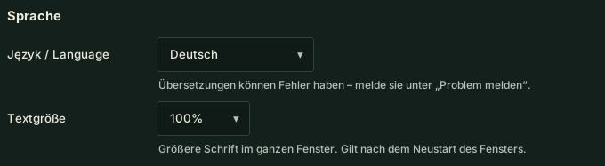
KORREKTURVergleich mit dem Gegner: klar mit Namen („Müller ist schneller in T5…“), in jeder Sprache auch ohne Groq-Schlüssel.
KORREKTUR„Wo verliere ich auf Müller?“ vergleicht mit dem Gegner, nicht mit deiner eigenen Runde.
KORREKTUR„Wie ist die Lage?“ und „was ist los?“ – kurzer Stand statt keiner Antwort.
KORREKTUR„Du kannst reden“ / „rede weiter“ beendet auch die Stummschaltung nach „Ruhe“.
KORREKTURDie polnische Stimme spricht „Spotter“ richtig aus.
KORREKTURFenster: kleine Schrift größer, graue Texte deutlicher.
KORREKTURFenster: Der Inhalt eines Tabs erscheint sofort nach dem Öffnen.
KORREKTURDas Ziel „Renntempo“ ist im Fenster als experimentelle Funktion gekennzeichnet.
Version 0.4.3.38 (12.11.2026)
NEUFahrbericht, Karte Reifen: optimale Reifentemperatur des Autos (in Assetto Corsa auch der optimale Druck).
KORREKTURFenster nach dem Update: Screenshots neuer Funktionen in voller Größe, gut lesbar.
KORREKTURFahrbericht: Reifentemperaturen – die Außenkante liegt auf der Außenseite des Autos.
KORREKTURFahrbericht: Die Antwort auf eine Frage erscheint, ohne die ganze Seite neu zu laden.
Version 0.4.3.37 (12.11.2026)
NEUFahrziel: „Beste Zeit“ oder „Renntempo“ (Langstrecke, experimentelle Funktion) – der Bericht gibt Tipps für die beste Runde oder für Durchschnittstempo und Reifenverschleiß; Schalter auf der Seite Ingenieur und per Stimme.

NEUFahrbericht: Karte „Seit dem letzten Mal“ (Vergleich mit der vorigen oder einer gewählten Fahrt auf dieser Strecke mit diesem Auto), „Frag zu diesem Bericht“ (auch per Stimme: „was steht im Bericht?“), Filter Strecke und Auto, „Bericht löschen“, einfachere Texte bei „Nächster Stint“.


NEU„Was ist neu“ im Fenster und auf der Pit Wall: Screenshots neuer Funktionen – du siehst, wo sie sind und wie sie aussehen.
NEULanger Stint: frag „wie schone ich die Reifen?“ – der Ingenieur nennt Regeln aus deinen Daten; beim Ziel „Renntempo“ vergleicht er keine Kurven mehr mit der besten Runde.
NEURenntempo (experimentelle Funktion): Stintlänge und Reifen für 1–3 Stints (Seite Ingenieur oder per Stimme) – der Bericht rechnet Tempoverlust und Prognose für den Reifensatz.

KORREKTURFahrbericht: einheitlich „Konstanz“ (auch auf der Pit Wall), ein Satz statt Wiederholungen bei derselben Fahrzeugschwäche, Vergleiche nur ähnlicher Fahrten, Tipps in der Programmsprache, „Stint-Zusammenfassung“ aktualisiert den Live-Bericht.
KORREKTURKI: kürzere Anfragen an Groq – seltener „Limit erreicht“; der Ingenieur sagt, ob es das Minuten- oder das Tageslimit ist.
KORREKTURAssetto Corsa: genauere KI-Setup-Tipps (Dämpfer, Aufsetzen, Bodenfreiheit, Sturz, Bremsen).
KORREKTURUpdate-Abfrage: Änderungsliste in der Programmsprache.
KORREKTURDer Drucktipp bei geänderter Streckentemperatur (Nacht, Morgen) funktioniert wieder.
Version 0.4.3.36 (12.11.2026)
NEUFahrbericht: Schaltfläche zum Vergleich deiner Fahrt mit einem Teamkollegen auf der Pit Wall.
KORREKTURDie Streckenkarte erfasst wieder die genaue Streckenform und sendet sie ans Team.
KORREKTUR„Wie groß ist der Abstand?“ – Abstand zum Auto vor und hinter dir (außerhalb des Rennens: Rundenzeiten), ohne KI.
Version 0.4.3.35 (11.11.2026)
NEUFahrbericht in der Demo: Karte mit dem, was die Vollversion aus dieser Fahrt zeigen würde.
NEU„Wie habe ich den lila Sektor gemacht?“ – was im besten Sektor oder in der besten Runde besser lief als sonst.
KORREKTURMikrofon: Schaltest du das Headset erst nach dem Start ein, wechselt der Ingenieur selbst vom Laptop-Mikrofon dorthin.
KORREKTURFahrbericht: richtige Schikanennamen in Setup-Tipps, ohne Wiederholungen.
Version 0.4.3.34 (11.11.2026)
NEUWarnung, wenn du eine Einstellung in der Garage entgegen dem Tipp änderst.
KORREKTURSetup-Tipps wiederholen sich nicht mehr im Kreis.
Version 0.4.3.33 (11.11.2026)
NEUPit Wall: genaue Streckenform (alle 4 m) vom ersten Teamfahrer, der die Strecke fährt.
Version 0.4.3.32 (11.11.2026)
NEUTeam: gleiche Kurvennummern bei allen Fahrern – auf der Pit Wall und in Berichten.
KORREKTURKarte im Bericht: genaue Streckenform aus deinem Auto (Schikanen nicht mehr gerade), der Punkt fährt halb so schnell.
KORREKTURFahrbericht: PS / NS und SETUP auch bei weniger als 4 sauberen Runden.
KORREKTURFahrbericht: kein „früher Gas“, wenn der Ausgang bis zum Bremsen für die nächste Kurve voll gefahren wurde.
KORREKTURFahrbericht: zeigt, wie viele saubere Runden für sichere Setup-Tipps fehlten.
KORREKTURFahrbericht: in den Kurvendetails ein Grip-Balken pro Phase.
Nouveautés
Changements des dernières versions de Pit Wall Crew.
Version 0.4.4.1 (14.11.2026)
CORRECTIONFenêtre : plus de sauts au changement de page ou de taille – la page et le rapport de conduite s'affichent déjà mis en page.
CORRECTIONPit Wall : page sécurisée – les données de la base de l'équipe et du lien spectateurs s'affichent toujours comme du texte.
CORRECTIONPit Wall : après « Actualiser » dans « Tours », la liste de comparaison affiche les nouveaux tours.
CORRECTIONPit Wall : après une nouvelle connexion à la même équipe, la vue de l'équipe revient au lieu de l'écran de connexion.
CORRECTIONPit Wall : le filtre de session dans « Tours » ne mélange plus les tours de deux voitures de l'équipe roulant en même temps.
CORRECTIONPit Wall : « Plan rapide » affiche un message en cas de nombres erronés au lieu de bloquer la page.
Version 0.4.4.0 (13.11.2026)
NOUVEAUUne sortie de piste ne compte qu'avec une conséquence (pénalité du jeu, temps perdu, choc) ; le rapport de conduite indique à part les passages au large sans pénalité.
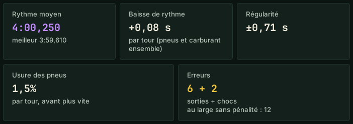
CORRECTIONLe conseil pneus pour l'arrêt ne change plus pendant le relais (c'était « quatre pneus », puis « sans pneus » à l'entrée des stands).
CORRECTIONConseil de pressions pour l'arrêt seulement à partir de pressions stabilisées ; dans Assetto Corsa en crans du jeu.
CORRECTION« Réveille-toi ! » ne tombe plus après un arrêt ou un choc ; « tu as retrouvé le rythme » seulement quand ton rythme est connu.
CORRECTIONLes questions sont reconnues par mots entiers – plus de réponses sur le mauvais sujet.
CORRECTION« On change les pneus ? » est une question, pas une commande ; « énergie au plein » règle le menu des stands.
CORRECTION« Faut-il passer aux pneus pluie ? » reçoit le conseil sur la pluie, pas sur l'usure des pneus.
CORRECTION« Je peux faire 15 tours avec le plein ? » compte aussi l'énergie virtuelle.
CORRECTIONRivaux : écart, rythme et prévision de jonction concordent ; pas de comparaison avec un tour d'arrêt.
CORRECTIONVitesse maximale des rivaux seulement à partir d'un tour complet.
CORRECTIONLe meilleur tour est un temps validé par le jeu – sans les tours annulés pour limites de piste (rapport de conduite et voix).
CORRECTIONLe rapport de conduite et le résumé de course incluent le dernier tour jusqu'à l'arrivée.
CORRECTIONRapport de conduite : rien n'est coupé, même dans une fenêtre étroite ou avec la mise à l'échelle de l'écran ; « Avec l'énergie pleine … tours » correct.
CORRECTIONRapport de conduite : « ABS » et « TC » en majuscules (c'était « Abs pendant tout le freinage »).
CORRECTIONAprès une question de l'ingénieur (« Ça te va ? »), plus rien n'est ajouté.
CORRECTIONVoix polonaise : fractions correctes.
CORRECTIONDerniers tours de course : réponses correctes sur la stratégie, les arrêts des rivaux, le carburant jusqu'à l'arrivée et les dégâts.
CORRECTION« Météo ? » : « La piste refroidit, environ 3 degrés par heure » au lieu de « change de -3 degrés ».
CORRECTIONLe conseiller météo recommande le changement de pneus aussi dans une session mouillée dès le départ.
CORRECTIONNoms des pilotes toujours avec une majuscule.
CORRECTIONAutres langues sans clé Groq : messages sur l'arrêt, la pluie et la fatigue, conseils de réglage, notes et tout le rapport de conduite sont traduits.
CORRECTIONAutres langues sans clé Groq : les commandes fonctionnent avec n'importe quel nom de pilote.
CORRECTIONAutres langues : notes et remarques sur la voiture enregistrées avec les mots du pilote ; un numéro de virage ne fait plus perdre le reste de la phrase.
CORRECTIONEspagnol : le Pit Wall et la radio d'équipe ne repassent plus au polonais.
CORRECTIONUnités °F, mph, psi et gallons : tous les nombres d'une phrase sont convertis (pneus, pressions, vitesse maximale, carburant).
CORRECTIONDémo : « silence », « où est Dupont ? » et « quelles sont mes notes ? » fonctionnent ; les commandes payantes disent qu'elles sont dans la version complète.
CORRECTIONDémo : les étoiles de la liste des commandes correspondent à ce qui fonctionne ; le rapport de conduite montre le virage avec la plus grosse perte.
CORRECTIONDémo : seulement les faits sur la pluie ; quand changer de pneus, c'est dans la version complète.
CORRECTIONMode Solo : la commande de notification dit qu'elle ne fonctionne qu'en équipe.
CORRECTIONFermer la fenêtre juste après le lancement n'envoie plus de rapport de plantage.
CORRECTIONUne question avec le prénom de l'ingénieur (« Qu'est-ce qui se passe, Larry ? ») est comprise comme sans prénom, dans toutes les langues.
CORRECTIONL'ingénieur répond à un salut (« Salut »).
CORRECTIONQuand Windows bloque une partie du programme (« Contrôle intelligent des applications »), la fenêtre le dit clairement et indique quoi faire.
Version 0.4.3.44 (12.11.2026)
NOUVEAUGuide vocal des commandes : « quelles sont les commandes sur les rivaux ? », « que puis-je demander sur les pneus ? », « suite ».
NOUVEAURival virage par virage sans nom : « où je perds sur celui de devant ? », « où celui de derrière est plus rapide ? ».
NOUVEAURéglages → Son et langue : « Taille du texte » (100 / 110 / 125 %) pour toute la fenêtre.
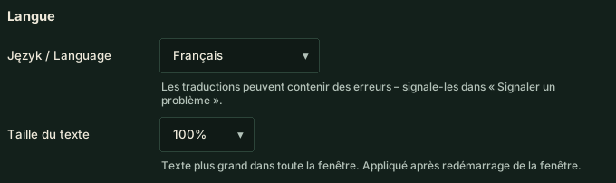
CORRECTIONComparaison avec un rival : clairement avec le nom (« Dupont est plus rapide en T5… »), dans chaque langue, même sans clé Groq.
CORRECTION« Où je perds sur Dupont ? » compare avec le rival, pas avec ton propre tour.
CORRECTION« Quelle est la situation ? » et « qu'est-ce qui se passe ? » – un état rapide au lieu d'aucune réponse.
CORRECTION« Tu peux parler » / « continue » met aussi fin au silence après « silence ».
CORRECTIONLa voix polonaise prononce « spotter » correctement.
CORRECTIONFenêtre : petits textes plus grands, textes gris plus nets.
CORRECTIONFenêtre : le contenu d'un onglet apparaît dès son ouverture.
CORRECTIONL'objectif « Rythme de course » est signalé dans la fenêtre comme fonction expérimentale.
Version 0.4.3.38 (12.11.2026)
NOUVEAURapport de roulage, carte Pneus : température optimale des pneus de la voiture (dans Assetto Corsa aussi la pression optimale).
CORRECTIONFenêtre après la mise à jour : captures des nouvelles fonctions en taille réelle, lisibles.
CORRECTIONRapport de roulage : températures des pneus – le bord extérieur est du côté extérieur de la voiture.
CORRECTIONRapport de roulage : la réponse à une question s'affiche sans recharger toute la page.
Version 0.4.3.37 (12.11.2026)
NOUVEAUObjectif : « Meilleur temps » ou « Rythme de course » (endurance, fonction expérimentale) – le rapport donne des conseils pour le meilleur tour ou pour le rythme moyen et l'usure des pneus ; sélecteur sur la page Ingénieur et à la voix.

NOUVEAURapport de roulage : carte « Depuis la dernière fois » (comparaison avec la session précédente ou choisie sur ce circuit avec cette voiture), « Demander sur ce rapport » (aussi à la voix : « quoi dans le rapport ? »), filtre circuit et voiture, « Supprimer le rapport », descriptions plus simples dans « Prochain relais ».


NOUVEAU« Nouveautés » dans la fenêtre et sur le Pit Wall : captures des nouvelles fonctions – on voit où elles sont et à quoi elles ressemblent.
NOUVEAULong relais : demande « comment préserver les pneus ? » – l'ingénieur donne les règles d'après tes données ; avec l'objectif « Rythme de course », il ne compare plus les virages au meilleur tour.
NOUVEAURythme de course (fonction expérimentale) : longueur du relais et pneus pour 1 à 3 relais (page Ingénieur ou à la voix) – le rapport calcule la baisse de rythme et une prévision pour le train de pneus.

CORRECTIONRapport de roulage : libellé « Régularité » partout (aussi sur le Pit Wall), une phrase au lieu de répétitions pour le même défaut de la voiture, comparaisons seulement entre sessions semblables, conseils dans la langue du programme, « résumé du relais » met à jour le rapport en direct.
CORRECTIONIA : requêtes plus courtes vers Groq – moins de « limite atteinte » ; l’ingénieur dit s’il s’agit de la limite par minute ou quotidienne.
CORRECTIONAssetto Corsa : conseils de setup de l’IA plus précis (amortisseurs, talonnage, garde au sol, carrossage, freins).
CORRECTIONFenêtre de mise à jour : liste des changements dans la langue du programme.
CORRECTIONLe conseil de pression quand la température de piste change (nuit, matin) fonctionne à nouveau.
Version 0.4.3.36 (12.11.2026)
NOUVEAURapport de conduite : bouton pour comparer ton passage avec un coéquipier sur le Pit Wall.
CORRECTIONLa carte du circuit enregistre de nouveau le tracé précis et l’envoie à l’équipe.
CORRECTION« Quel écart ? » – écart avec les voitures devant et derrière (hors course : temps au tour), sans passer par l’IA.
Version 0.4.3.35 (11.11.2026)
NOUVEAURapport de conduite en démo : une carte avec ce que la version complète montrerait de cette session.
NOUVEAU« Comment j’ai fait ce secteur violet ? » – ce qui a mieux marché que d’habitude dans ton meilleur secteur ou tour.
CORRECTIONMicro : si tu allumes ton casque après le lancement, l’ingénieur bascule tout seul depuis le micro du portable.
CORRECTIONRapport de conduite : noms de chicanes corrects dans les conseils de réglage, sans répétitions.
Version 0.4.3.34 (11.11.2026)
NOUVEAUAvertissement quand tu changes un réglage au garage dans le sens inverse du conseil.
CORRECTIONLes conseils de réglage ne tournent plus en rond.
Version 0.4.3.33 (11.11.2026)
NOUVEAUPit Wall : forme exacte du circuit (tous les 4 m) du premier pilote de l’équipe qui fait un tour.
Version 0.4.3.32 (11.11.2026)
NOUVEAUÉquipe : mêmes numéros de virages pour tous les pilotes – sur le Pit Wall et dans les rapports.
CORRECTIONCarte du rapport : forme exacte du circuit d’après ta voiture (les chicanes ne sont plus droites), le point va 2 fois moins vite.
CORRECTIONRapport de conduite : PS / NS et SETUP aussi avec moins de 4 tours propres.
CORRECTIONRapport de conduite : plus de conseil « accélère plus tôt » quand la sortie était à fond jusqu’au freinage du virage suivant.
CORRECTIONRapport de conduite : indique combien de tours propres manquaient pour des conseils de réglage sûrs.
CORRECTIONRapport de conduite : une seule barre d’adhérence par phase dans le détail du virage.
Novedades
Cambios en las últimas versiones de Pit Wall Crew.
Versión 0.4.4.1 (14.11.2026)
CORRECCIÓNVentana: sin saltos al cambiar de página o de tamaño – la página y el informe de conducción aparecen ya colocados.
CORRECCIÓNPit Wall: página protegida – los datos de la base del equipo y del enlace de espectador se muestran siempre como texto.
CORRECCIÓNPit Wall: tras «Actualizar» en «Vueltas», la lista de comparación muestra las vueltas nuevas.
CORRECCIÓNPit Wall: al volver a iniciar sesión en el mismo equipo vuelve la vista del equipo en lugar de la pantalla de inicio de sesión.
CORRECCIÓNPit Wall: el filtro de sesión en «Vueltas» ya no mezcla vueltas de dos coches del equipo que ruedan a la vez.
CORRECCIÓNPit Wall: «Plan rápido» muestra un mensaje con números erróneos en lugar de bloquear la página.
Versión 0.4.4.0 (13.11.2026)
NUEVOUna salida de pista solo cuenta si tiene consecuencias (penalización del juego, tiempo perdido, golpe); el informe de conducción muestra aparte las salidas anchas sin penalización.
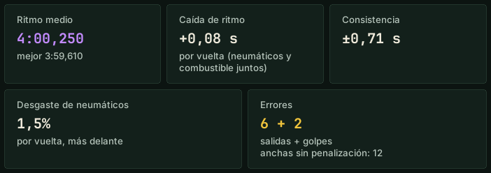
CORRECCIÓNEl consejo de neumáticos para la parada ya no cambia durante el stint (decía «cuatro neumáticos» y, al entrar, «sin neumáticos»).
CORRECCIÓNConsejo de presiones para la parada solo con presiones estabilizadas; en Assetto Corsa en clics del juego.
CORRECCIÓN«¡Despierta!» ya no suena tras una parada o un golpe; «has vuelto al ritmo» solo cuando se conoce tu ritmo.
CORRECCIÓNLas preguntas se reconocen por palabras completas: se acabaron las respuestas sobre otro tema.
CORRECCIÓN«¿Cambiamos neumáticos?» es una pregunta, no una orden; «energía al máximo» ajusta el menú de boxes.
CORRECCIÓN«¿Cambiamos a neumáticos de lluvia?» recibe el consejo sobre la lluvia, no sobre el desgaste.
CORRECCIÓN«¿Hago 15 vueltas con el depósito lleno?» también cuenta la energía virtual.
CORRECCIÓNRivales: distancia, ritmo y previsión de alcance coinciden; sin comparaciones con una vuelta de parada.
CORRECCIÓNVelocidad máxima de los rivales solo a partir de una vuelta completa.
CORRECCIÓNLa mejor vuelta es un tiempo validado por el juego: sin vueltas anuladas por límites de pista (informe de conducción y voz).
CORRECCIÓNEl informe de conducción y el resumen de carrera incluyen la última vuelta hasta la meta.
CORRECCIÓNInforme de conducción: nada se corta, tampoco en una ventana estrecha ni con el escalado de pantalla; «Con energía completa … vueltas» correcto.
CORRECCIÓNInforme de conducción: «ABS» y «TC» en mayúsculas (decía «Abs durante toda la frenada»).
CORRECCIÓNTras una pregunta del ingeniero («¿Vale?») ya no se añade nada más.
CORRECCIÓNVoz polaca: fracciones correctas.
CORRECCIÓNÚltimas vueltas de carrera: respuestas correctas sobre estrategia, paradas de los rivales, combustible hasta meta y daños.
CORRECCIÓN«¿Qué tiempo hace?»: «La pista se enfría, unos 3 grados por hora» en vez de «cambia -3 grados».
CORRECCIÓNEl asesor del tiempo aconseja el cambio de neumáticos también en una sesión mojada desde el inicio.
CORRECCIÓNNombres de pilotos siempre con mayúscula.
CORRECCIÓNOtros idiomas sin clave Groq: mensajes de parada, lluvia y cansancio, consejos de reglaje, notas y todo el informe de conducción están traducidos.
CORRECCIÓNOtros idiomas sin clave Groq: los comandos funcionan con cualquier nombre de piloto.
CORRECCIÓNOtros idiomas: las notas y comentarios sobre el coche se guardan con las palabras del piloto; un número de curva ya no hace perder el resto de la frase.
CORRECCIÓNEspañol: el Pit Wall y la radio del equipo ya no vuelven al polaco.
CORRECCIÓNUnidades °F, mph, psi y galones: se convierten todos los números de la frase (neumáticos, presiones, velocidad máxima, combustible).
CORRECCIÓNDemo: funcionan «silencio», «¿dónde está García?» y «¿qué notas tengo?»; los comandos de pago dicen que están en la versión completa.
CORRECCIÓNDemo: las estrellas de la lista de comandos coinciden con lo que funciona; el informe de conducción muestra la curva con mayor pérdida.
CORRECCIÓNDemo: sobre la lluvia solo los hechos; cuándo cambiar los neumáticos está en la versión completa.
CORRECCIÓNModo Solo: el comando de notificación dice que solo funciona en equipo.
CORRECCIÓNCerrar la ventana justo después de iniciar ya no envía un informe de fallos.
CORRECCIÓNUna pregunta con el nombre del ingeniero («¿Qué pasa, Larry?») se entiende igual que sin nombre, en todos los idiomas.
CORRECCIÓNEl ingeniero responde a un saludo («Hola»).
CORRECCIÓNCuando Windows bloquea parte del programa («Control inteligente de aplicaciones»), la ventana lo dice claramente e indica qué hacer.
Versión 0.4.3.44 (12.11.2026)
NUEVOGuía de voz de comandos: «¿qué comandos hay sobre los rivales?», «¿qué puedo preguntar sobre los neumáticos?», «más».
NUEVORival curva a curva sin nombre: «¿dónde pierdo con el de delante?», «¿dónde es más rápido el de detrás?».
NUEVOAjustes → Sonido e idioma: «Tamaño del texto» (100 / 110 / 125%) para toda la ventana.
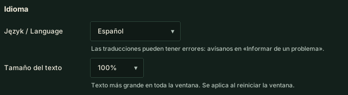
CORRECCIÓNComparación con un rival: claro con el nombre («García es más rápido en T5…»), en todos los idiomas, también sin clave Groq.
CORRECCIÓN«¿Dónde pierdo con García?» compara con el rival, no con tu propia vuelta.
CORRECCIÓN«¿Cómo vamos?» y «¿qué pasa?»: estado rápido en vez de quedarse sin respuesta.
CORRECCIÓN«Puedes hablar» / «sigue hablando» también termina el silencio tras «silencio».
CORRECCIÓNLa voz polaca pronuncia «spotter» correctamente.
CORRECCIÓNVentana: texto pequeño más grande, texto gris más nítido.
CORRECCIÓNVentana: el contenido de una pestaña aparece nada más abrirla.
CORRECCIÓNEl objetivo «Ritmo de carrera» aparece en la ventana como función experimental.
Versión 0.4.3.38 (12.11.2026)
NUEVOInforme de conducción, tarjeta Neumáticos: temperatura óptima de neumáticos del coche (en Assetto Corsa también la presión óptima).
CORRECCIÓNVentana tras actualizar: capturas de las funciones nuevas a tamaño completo, legibles.
CORRECCIÓNInforme de conducción: temperaturas de neumáticos – el borde exterior queda en el lado exterior del coche.
CORRECCIÓNInforme de conducción: la respuesta a una pregunta aparece sin refrescar toda la página.
Versión 0.4.3.37 (12.11.2026)
NUEVOObjetivo: «Mejor tiempo» o «Ritmo de carrera» (resistencia, función experimental) – el informe da consejos para la mejor vuelta o para el ritmo medio y el desgaste de neumáticos; selector en la página Ingeniero y por voz.

NUEVOInforme de conducción: tarjeta «Desde la última vez» (comparación con la salida anterior o elegida en este circuito con este coche), «Pregunta sobre este informe» (también por voz: «¿qué dice el informe?»), filtro de circuito y coche, «Borrar informe», descripciones más simples en «Próximo stint».


NUEVO«Novedades» en la ventana y en el Pit Wall: capturas de las funciones nuevas – ves dónde están y cómo se ven.
NUEVOStint largo: pregunta «¿cómo cuidar los neumáticos?» – el ingeniero da reglas con tus datos; con el objetivo «Ritmo de carrera» ya no compara curvas con la mejor vuelta.
NUEVORitmo de carrera (función experimental): duración del stint y neumáticos para 1–3 stints (página Ingeniero o por voz) – el informe calcula la caída de ritmo y una previsión para el juego de neumáticos.

CORRECCIÓNInforme de conducción: «Consistencia» (también en el Pit Wall), una frase en vez de repeticiones para el mismo problema del coche, comparaciones solo entre salidas parecidas, consejos en el idioma del programa, «resumen del stint» actualiza el informe en directo.
CORRECCIÓNIA: peticiones más cortas a Groq – menos «límite alcanzado»; el ingeniero dice si es el límite por minuto o el diario.
CORRECCIÓNAssetto Corsa: consejos de setup de la IA más precisos (amortiguadores, golpes contra el suelo, altura, caída, frenos).
CORRECCIÓNAviso de actualización: lista de cambios en el idioma del programa.
CORRECCIÓNEl consejo de presiones al cambiar la temperatura de pista (noche, mañana) vuelve a funcionar.
Versión 0.4.3.36 (12.11.2026)
NUEVOInforme de conducción: botón para comparar tu vuelta con un compañero en el Pit Wall.
CORRECCIÓNEl mapa del circuito vuelve a recoger la forma exacta de la pista y la envía al equipo.
CORRECCIÓN«¿Qué distancia?» – distancia al coche de delante y de detrás (fuera de carrera: tiempos por vuelta), sin preguntar a la IA.
Versión 0.4.3.35 (11.11.2026)
NUEVOInforme de conducción en la demo: tarjeta con lo que la versión completa mostraría de esta tanda.
NUEVO«¿Cómo hice el sector morado?» – qué salió mejor de lo normal en tu mejor sector o vuelta.
CORRECCIÓNMicrófono: si enciendes los auriculares después de abrir el programa, el ingeniero cambia solo desde el micrófono del portátil.
CORRECCIÓNInforme de conducción: nombres de chicanas correctos en los consejos de reglaje, sin repeticiones.
Versión 0.4.3.34 (11.11.2026)
NUEVOAviso cuando cambias un ajuste en el garaje al revés que el consejo.
CORRECCIÓNLos consejos de reglaje ya no se repiten en círculo.
Versión 0.4.3.33 (11.11.2026)
NUEVOPit Wall: forma exacta del circuito (cada 4 m) del primer piloto del equipo que da una vuelta.
Versión 0.4.3.32 (11.11.2026)
NUEVOEquipo: los mismos números de curva para todos los pilotos, en el Pit Wall y en los informes.
CORRECCIÓNMapa del informe: forma exacta del circuito según tu coche (las chicanas ya no salen rectas), el punto va 2 veces más lento.
CORRECCIÓNInforme de conducción: PS / NS y SETUP también con menos de 4 vueltas limpias.
CORRECCIÓNInforme de conducción: sin «gas antes» cuando la salida fue a fondo hasta frenar para la siguiente curva.
CORRECCIÓNInforme de conducción: indica cuántas vueltas limpias faltaron para consejos de reglaje seguros.
CORRECCIÓNInforme de conducción: una sola barra de agarre por fase en el detalle de la curva.
Novità
Modifiche nelle ultime versioni di Pit Wall Crew.
Versione 0.4.4.1 (14.11.2026)
CORREZIONEFinestra: niente più salti al cambio di pagina o di dimensione – la pagina e il rapporto di guida compaiono già impaginati.
CORREZIONEPit Wall: pagina protetta – i dati del database della squadra e del link spettatore sono sempre mostrati come testo.
CORREZIONEPit Wall: dopo «Aggiorna» in «Giri», l'elenco di confronto mostra i giri nuovi.
CORREZIONEPit Wall: accedendo di nuovo alla stessa squadra torna la vista della squadra invece della schermata di accesso.
CORREZIONEPit Wall: il filtro sessione in «Giri» non mescola più i giri di due auto della squadra in pista insieme.
CORREZIONEPit Wall: «Piano rapido» mostra un messaggio con numeri errati invece di bloccare la pagina.
Versione 0.4.4.0 (13.11.2026)
NUOVOUn'uscita di pista conta solo se ha una conseguenza (penalità del gioco, tempo perso, urto); il rapporto di guida indica a parte i larghi senza penalità.
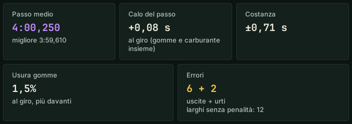
CORREZIONEIl consiglio gomme per la sosta non cambia più durante lo stint (diceva «quattro gomme» e, all'ingresso ai box, «niente gomme»).
CORREZIONEConsiglio pressioni per la sosta solo da pressioni stabilizzate; in Assetto Corsa in click del gioco.
CORREZIONE«Sveglia!» non arriva più dopo una sosta o un urto; «sei tornato in ritmo» solo quando il tuo passo è noto.
CORREZIONELe domande sono riconosciute per parole intere: niente più risposte sull'argomento sbagliato.
CORREZIONE«Cambiamo le gomme?» è una domanda, non un comando; «energia al pieno» imposta il menu box.
CORREZIONE«Passiamo alle gomme da pioggia?» riceve il consiglio sulla pioggia, non sull'usura delle gomme.
CORREZIONE«Faccio 15 giri col pieno?» conta anche l'energia virtuale.
CORREZIONERivali: distacco, passo e previsione di aggancio coincidono; nessun confronto con un giro di sosta.
CORREZIONEVelocità massima dei rivali solo da un giro completo.
CORREZIONEIl giro migliore è un tempo convalidato dal gioco: senza giri annullati per i limiti della pista (rapporto di guida e voce).
CORREZIONEIl rapporto di guida e il riepilogo della gara includono l'ultimo giro fino al traguardo.
CORREZIONERapporto di guida: nulla è tagliato, anche in una finestra stretta e con il ridimensionamento dello schermo; «Con energia piena … giri» corretto.
CORREZIONERapporto di guida: «ABS» e «TC» in maiuscolo (diceva «Abs per tutta la frenata»).
CORREZIONEDopo una domanda dell'ingegnere («Va bene?») non viene aggiunto altro.
CORREZIONEVoce polacca: frazioni corrette.
CORREZIONEUltimi giri di gara: risposte corrette su strategia, soste dei rivali, carburante fino al traguardo e danni.
CORREZIONE«Che tempo fa?»: «La pista si raffredda, circa 3 gradi all'ora» invece di «cambia di -3 gradi».
CORREZIONEIl consulente meteo consiglia il cambio gomme anche in una sessione bagnata fin dall'inizio.
CORREZIONENomi dei piloti sempre con la maiuscola.
CORREZIONEAltre lingue senza chiave Groq: messaggi su sosta, pioggia e stanchezza, consigli di assetto, note e tutto il rapporto di guida sono tradotti.
CORREZIONEAltre lingue senza chiave Groq: i comandi funzionano con qualsiasi nome di pilota.
CORREZIONEAltre lingue: note e commenti sull'auto salvati con le parole del pilota; un numero di curva non fa più perdere il resto della frase.
CORREZIONESpagnolo: il Pit Wall e la radio di squadra non tornano più al polacco.
CORREZIONEUnità °F, mph, psi e galloni: tutti i numeri della frase vengono convertiti (gomme, pressioni, velocità massima, carburante).
CORREZIONEDemo: funzionano «silenzio», «dov'è Rossi?» e «quali sono le mie note?»; i comandi a pagamento dicono che sono nella versione completa.
CORREZIONEDemo: le stelle nell'elenco dei comandi corrispondono a ciò che funziona; il rapporto di guida mostra la curva con la perdita maggiore.
CORREZIONEDemo: sulla pioggia solo i fatti; quando cambiare le gomme è nella versione completa.
CORREZIONEModalità Solo: il comando di notifica dice che funziona solo in squadra.
CORREZIONEChiudere la finestra subito dopo l'avvio non invia più un rapporto di crash.
CORREZIONEUna domanda con il nome dell'ingegnere («Che succede, Larry?») è capita come senza nome, in tutte le lingue.
CORREZIONEL'ingegnere risponde a un saluto («Ciao»).
CORREZIONEQuando Windows blocca una parte del programma («Smart App Control»), la finestra lo dice chiaramente e indica cosa fare.
Versione 0.4.3.44 (12.11.2026)
NUOVOGuida vocale ai comandi: «quali sono i comandi sui rivali?», «cosa posso chiedere sulle gomme?», «avanti».
NUOVORivale curva per curva senza nome: «dove perdo da quello davanti?», «dove è più veloce quello dietro?».
NUOVOImpostazioni → Audio e lingua: «Dimensione del testo» (100 / 110 / 125%) per tutta la finestra.
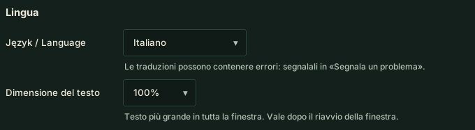
CORREZIONEConfronto con un rivale: chiaro con il nome («Rossi è più veloce in T5…»), in ogni lingua, anche senza chiave Groq.
CORREZIONE«Dove perdo da Rossi?» confronta con il rivale, non con il tuo giro.
CORREZIONE«Com'è la situazione?» e «che succede?»: stato rapido invece di nessuna risposta.
CORREZIONE«Puoi parlare» / «continua a parlare» termina anche il silenzio dopo «silenzio».
CORREZIONELa voce polacca pronuncia «spotter» correttamente.
CORREZIONEFinestra: testi piccoli più grandi, testi grigi più leggibili.
CORREZIONEFinestra: il contenuto di una scheda appare subito all'apertura.
CORREZIONEL'obiettivo «Passo gara» è indicato nella finestra come funzione sperimentale.
Versione 0.4.3.38 (12.11.2026)
NUOVOReport di guida, scheda Gomme: temperatura ottimale delle gomme della macchina (in Assetto Corsa anche la pressione ottimale).
CORREZIONEFinestra dopo l'aggiornamento: screenshot delle nuove funzioni a grandezza piena, leggibili.
CORREZIONEReport di guida: temperature gomme – il bordo esterno è sul lato esterno della macchina.
CORREZIONEReport di guida: la risposta a una domanda compare senza ricaricare tutta la pagina.
Versione 0.4.3.37 (12.11.2026)
NUOVOObiettivo: «Miglior tempo» o «Passo gara» (endurance, funzione sperimentale) – il report dà consigli per il giro migliore o per il passo medio e l'usura gomme; selettore nella pagina Ingegnere e a voce.

NUOVOReport di guida: scheda «Dall'ultima volta» (confronto con l'uscita precedente o scelta su questa pista con questa macchina), «Chiedi di questo report» (anche a voce: «cosa dice il report?»), filtro pista e macchina, «Elimina report», descrizioni più semplici in «Prossimo stint».


NUOVO«Novità» nella finestra e sul Pit Wall: screenshot delle nuove funzioni – vedi dove sono e come appaiono.
NUOVOStint lungo: chiedi «come risparmiare le gomme?» – l'ingegnere dà le regole dai tuoi dati; con l'obiettivo «Passo gara» non confronta più le curve con il giro migliore.
NUOVOPasso gara (funzione sperimentale): lunghezza dello stint e gomme per 1–3 stint (pagina Ingegnere o a voce) – il report calcola il calo del passo e una previsione per il treno di gomme.

CORREZIONEReport di guida: dicitura «Costanza» ovunque (anche sul Pit Wall), una frase invece di ripetizioni per lo stesso difetto della macchina, confronti solo tra uscite simili, consigli nella lingua del programma, «riepilogo dello stint» aggiorna il report dal vivo.
CORREZIONEIA: richieste più brevi a Groq – meno «limite raggiunto»; l’ingegnere dice se è il limite al minuto o quello giornaliero.
CORREZIONEAssetto Corsa: consigli di assetto dell’IA più precisi (ammortizzatori, talonamento, altezza da terra, camber, freni).
CORREZIONEAvviso di aggiornamento: elenco delle modifiche nella lingua del programma.
CORREZIONEIl consiglio sulle pressioni al cambio di temperatura della pista (notte, mattina) funziona di nuovo.
Versione 0.4.3.36 (12.11.2026)
NUOVORapporto di guida: pulsante per confrontare il tuo giro con un compagno sul Pit Wall.
CORREZIONELa mappa del circuito torna a raccogliere la forma precisa della pista e a inviarla alla squadra.
CORREZIONE«Che distacco?» – distacco dall’auto davanti e dietro (fuori gara: tempi sul giro), senza chiedere all’IA.
Versione 0.4.3.35 (11.11.2026)
NUOVORapporto di guida nella demo: una scheda con ciò che la versione completa mostrerebbe da questa guida.
NUOVO«Come ho fatto il settore viola?» – cosa è andato meglio del solito nel settore o giro migliore.
CORREZIONEMicrofono: se accendi le cuffie dopo l’avvio, l’ingegnere passa da solo dal microfono del portatile.
CORREZIONERapporto di guida: nomi delle chicane corretti nei consigli di assetto, senza ripetizioni.
Versione 0.4.3.34 (11.11.2026)
NUOVOAvviso quando cambi un'impostazione ai box al contrario del consiglio.
CORREZIONEI consigli di assetto non girano più in tondo.
Versione 0.4.3.33 (11.11.2026)
NUOVOPit Wall: forma esatta della pista (ogni 4 m) dal primo pilota della squadra che la percorre.
Versione 0.4.3.32 (11.11.2026)
NUOVOSquadra: stessi numeri di curva per tutti i piloti – sul Pit Wall e nei rapporti.
CORREZIONEMappa del rapporto: forma esatta della pista dalla tua auto (le chicane non sono più dritte), il punto va 2 volte più lento.
CORREZIONERapporto di guida: PS / NS e ASSETTO anche con meno di 4 giri puliti.
CORREZIONERapporto di guida: niente «gas prima» quando l’uscita era in pieno fino alla frenata per la curva successiva.
CORREZIONERapporto di guida: indica quanti giri puliti mancavano per consigli di assetto sicuri.
CORREZIONERapporto di guida: una sola barra di aderenza per fase nei dettagli della curva.
Nyheder
Ændringer i de seneste versioner af Pit Wall Crew.
Version 0.4.4.1 (14.11.2026)
RETTELSEVindue: ingen hop ved sideskift eller ændring af størrelse – siden og kørerapporten vises færdigt opstillet.
RETTELSEPit Wall: siden er sikret – data fra teamets database og tilskuerlinket vises altid som tekst.
RETTELSEPit Wall: efter »Opdater« i »Omgange« viser sammenligningslisten nye omgange.
RETTELSEPit Wall: når du logger ind igen på samme team, vender teamvisningen tilbage i stedet for loginskærmen.
RETTELSEPit Wall: sessionsfilteret i »Omgange« blander ikke længere omgange fra to teambiler, der kører samtidig.
RETTELSEPit Wall: »Hurtig plan« viser en besked ved forkerte tal i stedet for at fryse siden.
Version 0.4.4.0 (13.11.2026)
NYEn udforkørsel tæller kun, når den har en konsekvens (spillets straf, tabt tid, sammenstød); for bredt uden straf vises for sig i kørerapporten.
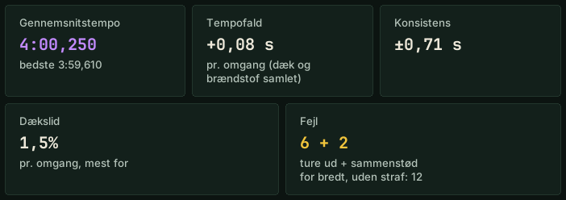
RETTELSEDækrådet til pitstoppet ændrer sig ikke længere i løbet af stintet (det sagde »fire dæk« og ved indkørslen »ingen dæk«).
RETTELSETrykråd til pitstoppet kun ud fra stabiliserede tryk; i Assetto Corsa i spillets klik.
RETTELSE»Vågn op!« kommer ikke længere efter et pitstop eller et sammenstød; »tilbage i rytmen« først, når dit tempo er kendt.
RETTELSESpørgsmål genkendes på hele ord – ikke flere svar om det forkerte emne.
RETTELSE»Skifter vi dæk?« er et spørgsmål, ikke en kommando; »fuld energi« indstiller pitmenuen.
RETTELSE»Skal vi skifte til regndæk?« får rådet om regn, ikke om dækslid.
RETTELSE»Kan jeg køre 15 omgange på fuld tank?« regner også med virtuel energi.
RETTELSERivaler: afstand, tempo og prognose passer sammen; ingen sammenligning med en pitstop-omgang.
RETTELSERivalernes topfart først fra en hel omgang.
RETTELSEDen bedste omgang er en tid, som spillet har godkendt – uden omgange slettet for banegrænser (kørerapport og stemme).
RETTELSEKørerapporten og løbsoversigten har den sidste omgang til mål med.
RETTELSEKørerapport: intet bliver skåret af, heller ikke i et smalt vindue eller med skærmskalering; korrekt »På fuld energi … omg.«.
RETTELSEKørerapport: »ABS« og »TC« med store bogstaver (der stod »Abs under hele opbremsningen«).
RETTELSEEfter ingeniørens spørgsmål (»OK?«) bliver der ikke tilføjet mere.
RETTELSEPolsk stemme: korrekte brøker.
RETTELSELøbets sidste omgange: korrekte svar om strategi, rivalernes pitstop, brændstof til mål og skader.
RETTELSE»Hvordan er vejret?«: »Banen køler af, cirka 3 grader i timen« i stedet for »ændrer sig med -3 grader«.
RETTELSEVejrrådgiveren anbefaler dækskift også i en session, der er våd fra starten.
RETTELSEKørernavne altid med stort begyndelsesbogstav.
RETTELSEAndre sprog uden Groq-nøgle: beskeder om pitstop, regn og træthed, opsætningsråd, noter og hele kørerapporten er oversat.
RETTELSEAndre sprog uden Groq-nøgle: kommandoer virker med ethvert kørernavn.
RETTELSEAndre sprog: noter og bemærkninger om bilen gemmes med kørerens egne ord; et svingnummer sluger ikke længere resten af sætningen.
RETTELSESpansk: Pit Wall og holdradioen falder ikke længere tilbage til polsk.
RETTELSEEnheder °F, mph, psi og gallon: alle tal i en sætning omregnes (dæk, tryk, topfart, brændstof).
RETTELSEDemo: »stille«, »hvor er Jensen?« og »hvad er mine noter?« virker; betalte kommandoer siger, at de er i den fulde version.
RETTELSEDemo: stjernerne på kommandolisten passer med det, der virker; kørerapporten viser svinget med det største tab.
RETTELSEDemo: kun fakta om regnen; hvornår der skal skiftes dæk, er i den fulde version.
RETTELSESolo-tilstand: notifikationskommandoen siger, at den kun virker i et hold.
RETTELSELukning af vinduet lige efter start sender ikke længere en nedbrudsrapport.
RETTELSEEt spørgsmål med ingeniørens navn (»Hvad sker der, Larry?«) forstås som uden navn, på alle sprog.
RETTELSEIngeniøren svarer på en hilsen (»Hej«).
RETTELSENår Windows blokerer en del af programmet (»Smart App Control«), siger vinduet det tydeligt og fortæller, hvad du skal gøre.
Version 0.4.3.44 (12.11.2026)
NYStemmeguide til kommandoer: »hvilke kommandoer er der om rivaler?«, »hvad kan jeg spørge om dæk?«, »videre«.
NYRival sving for sving uden navn: »hvor taber jeg til ham foran?«, »hvor er ham bagved hurtigere?«.
NYIndstillinger → Lyd og sprog: »Tekststørrelse« (100 / 110 / 125 %) for hele vinduet.
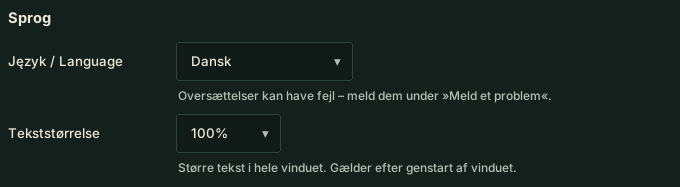
RETTELSESammenligning med en rival: tydeligt med navnet (»Jensen er hurtigere i T5…«), på alle sprog, også uden Groq-nøgle.
RETTELSE»Hvor taber jeg til Jensen?« sammenligner med rivalen, ikke med din egen omgang.
RETTELSE»Hvad er situationen?« og »hvad sker der?« – hurtig status i stedet for intet svar.
RETTELSE»Du må tale« / »bliv ved med at tale« afslutter også tavsheden efter »stille«.
RETTELSEDen polske stemme udtaler »spotter« korrekt.
RETTELSEVindue: lille tekst er større, grå tekst tydeligere.
RETTELSEVindue: en fanes indhold vises straks, når du åbner den.
RETTELSEMålet »Løbstempo« er markeret i vinduet som en eksperimentel funktion.
Version 0.4.3.38 (12.11.2026)
NYKørselsrapport, kortet Dæk: bilens optimale dæktemperatur (i Assetto Corsa også det optimale tryk).
RETTELSEVinduet efter opdatering: skærmbilleder af nye funktioner i fuld størrelse, læsbare.
RETTELSEKørselsrapport: dæktemperaturer – yderkanten vises på bilens yderside.
RETTELSEKørselsrapport: svaret på et spørgsmål vises uden at genindlæse hele siden.
Version 0.4.3.37 (12.11.2026)
NYKøremål: »Bedste tid« eller »Løbstempo« (endurance, eksperimentel funktion) – rapporten giver råd til bedste omgang eller til gennemsnitstempo og dækslid; kontakt på siden Ingeniør og med stemmen.

NYKørselsrapport: kortet »Siden sidst« (sammenligning med forrige eller en valgt tur på denne bane i denne bil), »Spørg om denne rapport« (også med stemmen: »hvad siger rapporten?«), filter for bane og bil, »Slet rapport«, enklere tekster under »Næste stint«.


NY»Nyheder« i vinduet og på Pit Wall: skærmbilleder af nye funktioner – du ser, hvor de er, og hvordan de ser ud.
NYLang stint: spørg »hvordan sparer jeg på dækkene?« – ingeniøren giver regler ud fra dine data; med målet »Løbstempo« sammenligner den ikke længere sving med bedste omgang.
NYLøbstempo (eksperimentel funktion): stintlængde og dæk til 1–3 stints (siden Ingeniør eller med stemmen) – rapporten beregner tempofald og en prognose for dæksættet.

RETTELSEKørselsrapport: »Konsistens« (også på Pit Wall), én sætning i stedet for gentagelser ved samme bilproblem, sammenligninger kun mellem lignende ture, råd på programmets sprog, »stint-opsummering« opdaterer live-rapporten.
RETTELSEAI: kortere forespørgsler til Groq – sjældnere »grænse nået«; ingeniøren siger, om det er grænsen pr. minut eller pr. dag.
RETTELSEAssetto Corsa: mere præcise AI-råd om opsætning (støddæmpere, bundslag, frihøjde, camber, bremser).
RETTELSEOpdateringsvindue: ændringslisten på programmets sprog.
RETTELSETrykrådet ved ændret banetemperatur (nat, morgen) virker igen.
Version 0.4.3.36 (12.11.2026)
NYKørselsrapport: knap til at sammenligne din tur med en holdkammerat på Pit Wall.
RETTELSEBanekortet samler igen banens præcise form og sender den til holdet.
RETTELSE»Hvad er afstanden?« – afstand til bilen foran og bagved (uden for løbet: omgangstider) uden at spørge AI.
Version 0.4.3.35 (11.11.2026)
NYKørselsrapport i demo: et kort med, hvad den fulde version ville vise fra denne kørsel.
NY»Hvordan kørte jeg den lilla sektor?« – hvad der gik bedre end normalt i din bedste sektor eller omgang.
RETTELSEMikrofon: tænder du headsettet efter start, skifter ingeniøren selv fra laptopens mikrofon.
RETTELSEKørselsrapport: korrekte chikanenavne i opsætningsråd, uden gentagelser.
Version 0.4.3.34 (11.11.2026)
NYAdvarsel, når du ændrer en indstilling i garagen modsat rådet.
RETTELSEOpsætningsråd gentager sig ikke længere i ring.
Version 0.4.3.33 (11.11.2026)
NYPit Wall: præcis baneform (hver 4. m) fra den første teamkører, der kører banen.
Version 0.4.3.32 (11.11.2026)
NYTeam: samme svingnumre for alle kørere – på Pit Wall og i rapporterne.
RETTELSEKort i rapporten: præcis baneform fra din bil (chikaner er ikke længere lige), prikken kører halvt så hurtigt.
RETTELSEKørselsrapport: PS / NS og OPSÆTNING vises også med færre end 4 rene omgange.
RETTELSEKørselsrapport: intet „tidligere gas“, når udkørslen var fuld gas helt til opbremsningen til næste sving.
RETTELSEKørselsrapport: viser, hvor mange rene omgange der manglede til sikre opsætningsråd.
RETTELSEKørselsrapport: én grebsbjælke pr. fase i svingdetaljerne.